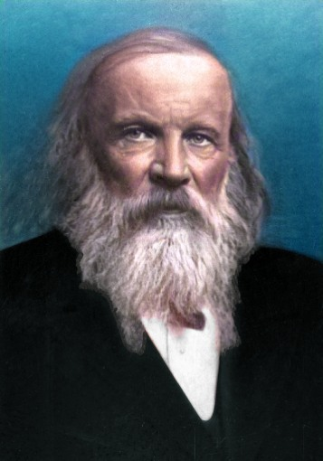

The Periodic Table: A Foundation of Chemistry
The periodic table is one of the most powerful tools in science. It organizes all known chemical elements according to their properties and atomic structure, revealing patterns that help scientists understand how matter behaves and interacts.

The Creator: Dmitri Mendeleev
In 1869, Russian chemist Dmitri Mendeleev introduced the first periodic table. He arranged 63 known elements by increasing atomic mass and recognized repeating patterns in their properties — a discovery that became known as the principle of periodicity.
Mendeleev’s table was revolutionary because he predicted the existence of undiscovered elements, leaving intentional gaps. Later discoveries like gallium and germanium confirmed his predictions, proving the strength of his scientific insight.
The Modern Periodic Table
As science advanced, the periodic table evolved. Today, elements are arranged by atomic number (the number of protons) instead of atomic mass. This structure reflects the organization of electrons and explains chemical behavior more precisely.
The modern table includes 118 elements, from hydrogen to oganesson, and remains a universal reference for chemists, physicists, and educators worldwide.
Why the Periodic Table Matters
The periodic table is more than a chart — it’s a map of matter itself. It guides innovation in medicine, energy, materials science, and technology. From understanding water and oxygen to developing new alloys and medicines, the periodic table continues to power human progress.